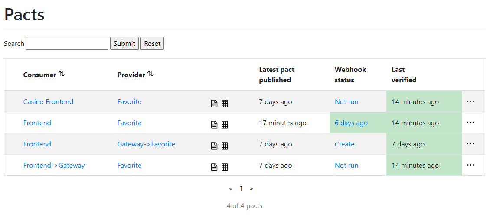
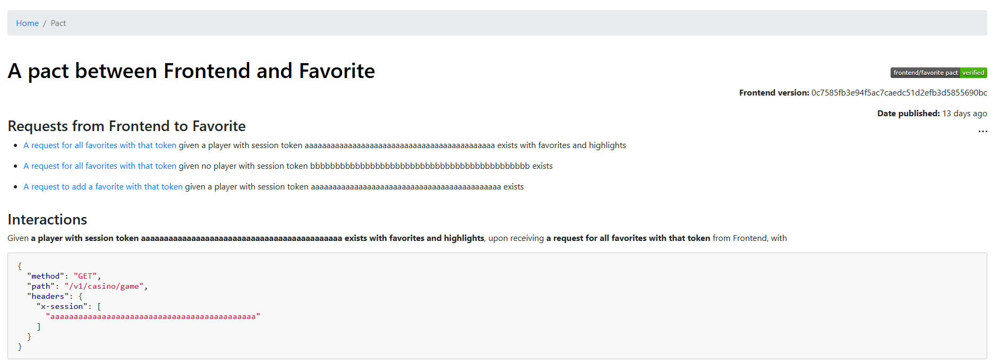
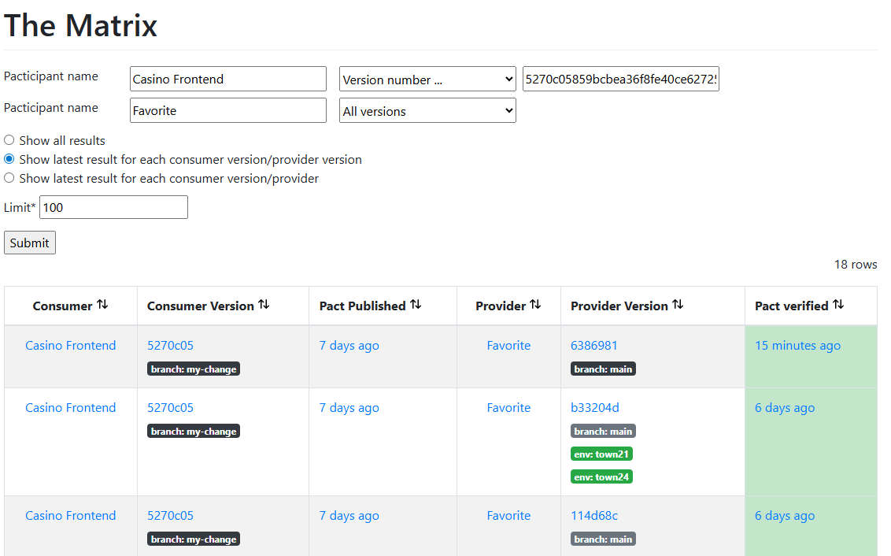

Pact Broker
Purpose
The Pact Broker is the central place where consumer contracts, provider verification results, service versions, branches, environments, and dependency information are stored.
It acts as the source of truth for whether services are compatible with each other before they are deployed.
Main Dashboard

The Pacts page shows all registered consumer-provider relationships. Each row represents a contract between a consumer and a provider.
- Consumer: The service that uses an API.
- Provider: The service that provides the API.
- Latest pact published: When the consumer last published a contract.
- Webhook status: Whether automatic verification has been triggered.
- Last verified: When the provider last verified the contract.
Green means the contract has been successfully verified. Grey means it has not been verified yet. Red means verification failed.
Contract Details

Opening a pact shows the actual interactions that make up the contract. These interactions describe what the consumer expects from the provider.
A contract can include expected HTTP methods, paths, headers, request data, response status codes, and response bodies.
During verification, the provider runs these interactions against its real implementation to prove that it still satisfies the consumer's expectations.
The Matrix

The Matrix shows whether specific consumer versions are compatible with specific provider versions.
Each row answers this question:
Is this exact consumer version compatible with this exact provider version?
This is important because a contract may pass for one provider version but fail for another. The Matrix keeps track of this compatibility history.
Versioning
Every pact and verification result is connected to a version number. The version should normally match the Git commit SHA so the contract can be traced back to the exact source code.
- Version: The exact service version, often a Git commit hash.
- Branch: The Git branch the version came from, such as main or feature/my-change.
- Environment: Where the version is deployed, such as test or production.
Typical Workflow
- The consumer writes a Pact test.
- The consumer publishes the contract to the Pact Broker.
- A webhook triggers the provider verification job.
- The provider verifies the contract against its implementation.
- The provider publishes the verification result back to the Broker.
- The Broker updates the Matrix.
- The team runs can-i-deploy before deployment.
- Deployment only continues if the required verifications have passed.
Output
The Pact Broker provides a central overview of contracts, verification results, service dependencies, and compatibility between versions.
This helps teams detect breaking API changes in CI/CD before they reach production.